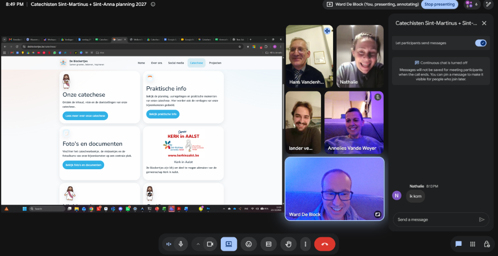

Intern Verslag · Inhoudelijke Afstemming
Inhoudelijke afstemming catechisten Sint-Martinus en Sint-Anna
Inhoudelijke afstemming van het catechesetraject tussen kerkplek Sint-Martinus en kerkplek Sint-Anna in overleg met Deken Hans: harmonisatie van de inhoud, stand van zaken van de kandidaat-vormelingen, planning van de catechesemomenten en toekomstige accenten voor Sint-Anna.
Vergaderfiche
Datum & Tijd:
Donderdag 23 oktober 2026 om 20:15
Donderdag 23 oktober 2026 om 20:15
Locatie:
Online via Google Meet (omwille van storm Austin)
Online via Google Meet (omwille van storm Austin)
Aanwezig:
Deken Hans V., Nathalie M., Ward D., Annelies V., Lander V.
Deken Hans V., Nathalie M., Ward D., Annelies V., Lander V.
Primair doel:
Inhoudelijke afstemming van het catechesetraject tussen kerkplek Sint-Martinus en kerkplek Sint-Anna, stand van zaken van de kandidaat-vormelingen opvolgen en concrete afspraken vastleggen voor werkjaar 2026-2027 en 2027-2028.
1. Stand van zaken (stavaza) kandidaat-vormelingen
Per kerkplek in en rond Aalst werd een actuele stand van zaken opgemaakt van het aantal ingeschreven en verwachte kandidaat-vormelingen voor het werkjaar 2026-2027:
Sint-Martinus
19
Kandidaat-vormelingen
Sint-Anna & Nieuwerkerken
4 + 4
Sint-Anna: 4 (mogelijk +1, 2 reageren niet) + Nieuwerkerken: 4
Sint-Antonius
44
Tekort aan catechisten: James werd gevraagd om een groepje op te nemen
Gijzegem & Hofstade
9 + 15 (26)
Gijzegem (9) samen met Hofstade (15)
Herdersem
24
Kandidaat-vormelingen
Mijlbeek
21
Kandidaat-vormelingen2. Overzicht catechesemomenten en gezamenlijke activiteiten (Werkjaar 2026-2027)
De planning en inhoudelijke indeling van de bijeenkomsten voor Sint-Martinus en de afstemming met Sint-Anna werden besproken. Een belangrijk uitgangspunt is dat Volg het Licht, de Kerstviering en de Paasviering gezamenlijke activiteiten zijn tussen kerkplek Sint-Martinus en kerkplek Sint-Anna, evenals de gezamenlijke vormelingennamiddag met de misdienaars:
| Datum | Bijeenkomst / Activiteit | Inhoud & Praktische toelichting |
|---|---|---|
| 15/11/2026 | Eerste catechese | Eerste catechesebijeenkomst. Het bestaande catecheseboekje van Sint-Anna wordt gedeeld met Sint-Martinus zodat zij dit kunnen hergebruiken en aanpassen aan hun eigen noden (zoals het vervangen van foto's van de Sint-Annakerk door beelden van de Sint-Martinuskerk). De eigenlijke kennismaking van de vormelingen schuift door naar de tweede catechese. Ouders zijn ook van harte welkom (inleiding geschiedenis van de kerk) en zitten bij de vormelingen. |
| 29/11/2026 | Tweede catechese | Kennismaking, Sint-Maarten (waarom gevierd en patroonheilige van de hoofdkerk) en toelichting bij de 7 sacramenten. |
| 12/12/2026 | Volg het Licht |
Gezamenlijke adventsactiviteit tussen Sint-Martinus en Sint-Anna. |
| 25/12/2026 | Kerstviering |
Gezamenlijke kerstviering tussen Sint-Martinus en Sint-Anna (Sint-Anna behoudt daarnaast de eigen catechese rond knutselen, dienstbaarheid en de kerstmarkt). |
| 17/01/2027 | Derde catechese | Delen van de mis en kennismaking met het missaaltje. |
| 31/01/2027 | Vierde catechese | Lichtmis, de 10 geboden (richting volgend werkjaar wordt dit een aparte catechese) en het kerkelijk jaar. |
| 20/02/2027 | Vormelingennamiddag |
Gezamenlijke activiteit met de misdienaars: film, pizza eten, uitleg over het misdienaarschap en samen zingen (liedjes voor de vormselviering). De kruisweg op zondag 21/02 komt hierdoor definitief te vervallen op Sint-Anna. |
| 07/03/2027 | Vijfde catechese | Naamopgave en kruisoplegging: diepere betekenis van het vormsel (handoplegging, zalving, de 7 gaven van de Heilige Geest). |
| 21/03/2027 | Zesde catechese | Palmzondag: aandacht voor de Goede Week en Pasen (kruisweg). |
| 28/03/2027 | Paasviering |
Gezamenlijke paasviering tussen Sint-Martinus en Sint-Anna. |
| Zondag 18/04/2027 | Repetitie | Repetitie na de zondagsmis. |
| Vrijdag 23/04/2027 | Generale repetitie | Repetitie om 18:00 in de kerk. |
| Zondag 25/04/2027 | Vormselviering | Plechtige vormselviering om 09:00. |
| Nog te bepalen | Dankviering | Dankviering (mogelijk te plannen met Pinksteren). |
3. Eventuele aanpassingen Sint-Anna (Werkjaar 2027-2028)
Met het oog op het werkjaar 2027-2028 werden voor de werking van Sint-Anna een aantal gerichte evaluaties en mogelijke optimalisaties besproken:
- Eerste catechese: Vóór de zondagsmis samenkomen met de vormelingen én hun ouders. Daarbij een rondleiding door het kerkgebouw organiseren met toelichting bij de geschiedenis van de parochiekerk.
- Naamopgave en kruisoplegging combineren: Deze twee momenten samenvoegen in één viering, bij voorkeur gepositioneerd naar de veertigdagentijd toe.
- Thematiek Onze Vader: De invulling van het Onze Vader (zowel bij aanvang als na Nieuwjaar) heroriënteren naar de actieve vraag: "Hoe bidden?".
- Insteek rond Lichtmis: Hoewel Maria bij Lichtmis een gewaardeerde rol speelt, ligt de theologische klemtoon op Jezus die wordt opgedragen in de tempel en het licht dat over Hem schijnt (dit werd reeds aangepast in het catecheseboekje van Sint-Anna voor 2026-2027).
- Kerstmis behouden: Sint-Anna behoudt de eigen catechese rond Kerstmis met creatief knutselen en de koppeling aan de Kerstmarkt en dienstbaarheid.
- Kruisweg komt te vervallen op Sint-Anna: De geplande catechese rond de kruisweg op 21 februari komt definitief te vervallen op Sint-Anna. De inhoud en de betekenis van de kruisweg worden meegenomen tijdens de catechese van de Goede Week. De tien geboden wordt ingericht als een afzonderlijke catechese.
4. Actiepunten
| Actiepunt | Omschrijving & Toelichting | Betrokkenen |
|---|---|---|
| Schoolbezoeken begin september | Begin september actief langsgaan in de basisscholen om rechtstreeks toelichting te geven over het Vormsel en kinderen warm te maken voor het traject. | Catechistenploeg |
| Tien Geboden als aparte catechese (2027-2028) | De Tien Geboden inhoudelijk uitwerken en inrichten als een volwaardige aparte catechesebijeenkomst in de kalender van 2027-2028. | Catechistenploegen Sint-Martinus & Sint-Anna |
| Organisatie activiteit vormelingen en misdienaars | Ward D. contacteert Pieter S. voor de praktische organisatie en afstemming van de gezamenlijke activiteit voor vormelingen en misdienaars (film, pizza, zang en kennismaking met het misdienaarschap op 20 februari 2027). | Ward D. (in overleg met Pieter S.) |
| Delen en aanpassen catecheseboekje | Het catecheseboekje van Sint-Anna wordt ter beschikking gesteld aan de ploeg van Sint-Martinus als gedeelde basis. Sint-Martinus kan het boekje vervolgens naar eigen wens aanpassen en personaliseren (zoals het vervangen van foto's van de Sint-Annakerk door beelden van de eigen Sint-Martinuskerk). | Catechisten Sint-Anna & Sint-Martinus |